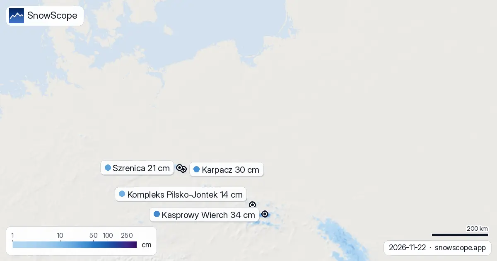

Poland: white above 1,000 m, green below
On 22 November, snow covers the high mountains of Poland but stops short of the valleys. Above 1,000 m the ground is almost fully white; below that height, green and brown slopes rule.
See the live snow forecast for Kasprowy Wierch in the SnowScope appSnow depth, powder alerts and the 3D map, free.
Where the snow line sits
The 1,000 m contour is the key to understanding Poland's snow today. Everything above it is snow country; everything below is still waiting. This matters if you are choosing which resort to visit: the question is whether its slopes sit above or below that line.
Snow blankets about 1,080 km² of Poland's high terrain on this date, which is 10 % of all the mountains we map. That figure dropped by 100 km² from the previous day, as lower ground warmed slightly.
| Resort | Snow depth | New snow, 72 h | Coming, next days | Top |
|---|---|---|---|---|
| Kasprowy Wierch | 34 cm | 10 cm | 8 cm | 1,958 m |
| Karpacz | 30 cm | 10 cm | 3 cm | 1,350 m |
| Szrenica | 21 cm | 9 cm | 4 cm | 1,306 m |
| Kompleks Pilsko-Jontek | 14 cm | 7 cm | 8 cm | 1,433 m |
| Borowice | 11 cm | 8 cm | 3 cm | – |

Snow depth by altitude band
The lowest band we track, 500–1,000 m, lies below the snow line. Here the average depth is under 1 cm and only 4 % of the ground is white. Ski runs in this zone are almost bare.
Between 1,000 and 1,500 m, the picture changes sharply. Snow averages 3 cm and covers 88 % of the slopes—a solid base for early November. Above 1,500 m, depths jump to 25 cm on average with complete cover. That is ski-able terrain.

Which resorts have the deepest base
Kasprowy Wierch leads all Polish resorts with 34 cm. It sits at 1,958 m, well into the deep-snow band. In the past three days it received 10 cm of fresh snow, and 8 cm more is forecast by 25 November.
Karpacz follows at 30 cm, also with 10 cm of recent fall and 3 cm expected. Szrenica holds 21 cm (9 cm fresh, 4 cm coming). Kompleks Pilsko-Jontek has 14 cm (7 cm fresh, 8 cm expected). Borowice sits at 11 cm (8 cm fresh, 3 cm expected). Of Poland's 113 resorts, only 33 carry snow on their upper slopes.
The three mountain ranges getting the most snow
The Tatras and the Karkonosze both received 10 cm of fresh snow over three days—the highest totals in Poland. The Beskids gathered 8 cm. These ranges sit above the snow line and are holding their cover well.
About 290 km² across the country received at least 5 cm in the past 72 hours. This fresh layer is boosting conditions on higher slopes, though it remains early season and coverage is still patchy below 1,000 m.
What is forecast for the next week
The next three days could bring up to 8 cm across the snowiest zones. Tuesday 24 November stands out as the heaviest day, with up to 6 cm possible. Over the full week, up to 11 cm is expected at the best-placed resorts.
Looking further ahead, the second week (30 November to 6 December) has potential for up to 25 cm where snow does fall most. This kind of November pattern is typical for building an early base.
How the snow cover has shifted
A week ago, on 16 November, Poland had 2,970 km² of snow—nearly triple today's total. The warmth of mid-November shrank that area, and cold returned only on 20–21 November, bringing the recent 10 cm that stabilised cover.
Kasprowy Wierch and Karpacz have swapped the leadership twice this week as snow patterns shifted. By 22 November, Kasprowy Wierch holds the top spot, suggesting the Tatras are holding their accumulation better than the Karkonosze right now.
Tips for skiers
- If you ski above 1,000 m, you have a continuous white base. Below that height, runs are thin and rocky. Choose higher resorts.
- Early-season snow is thin and hard underfoot. Expect firm, icy conditions in the morning and slush from midday. Start early and head down by 2 p.m.
- Wind-packed snow on ridges and exposed slopes can hide rocks and ruts. Stick to groomed runs until more depth builds.
- Before skiing off-piste, check the latest local avalanche bulletin. Frozen ground and thin cover make slopes unstable.
- Fresh 10 cm dumps over the next few days will help, but watch the forecast. If another warm spell arrives, the lower slopes will slip back to bare ground quickly.
About these numbers
Resort snow depths are the deepest snow on the resort's upper slopes on the date shown; they are estimates for an area, not a measurement at one point. Forecasts can change. Always read the official avalanche bulletin before going off-piste.
Cite this report
For research, teaching or the press: the numbers and charts are free to reuse under CC BY 4.0 with this citation.
SnowScope (2026), Poland: white above 1,000 m, green below, https://snowscope.app/blog/en/2026/11/poland-snow-line-22-november-2026.html, accessed 2026-11-22
SnowScope (Atlas Labs). (2026, November 22). Poland: white above 1,000 m, green below. SnowScope snow reports. https://snowscope.app/blog/en/2026/11/poland-snow-line-22-november-2026.html
BibTeX
@misc{snowscope2026polandsnowline22november,
author = {{SnowScope (Atlas Labs)}},
title = {Poland: white above 1,000 m, green below},
year = {2026},
month = nov,
howpublished = {\url{https://snowscope.app/blog/en/2026/11/poland-snow-line-22-november-2026.html}},
note = {Published 2026-11-22 13:34 UTC; accessed 2026-11-22}
}· CC BY 4.0 · Methods, data and tools →
Kasprowy Wierch: snow and temperature by height, this winter vs last (tools) →
Follow Kasprowy Wierch
Free: a message when fresh snow is coming, and the forecast every morning.
More snow reports

Only Borovets and Bansko have a trace of snow at the top today, 2 cm each. A week ago Borovets had 11 cm. Day by day, and the one snowy day in the forecast.

From 13 to 19 November 2026 Slovenia got the most snow and kept it; Serbia and Croatia had a deep but short white weekend; Montenegro only on Durmitor; Bulgaria almost none. The ranking, with links to each country report.

Snow is falling on Slovenia's ski mountains today: about 37 cm on Kanin and 21 cm on Krvavec. Where the snow lies, how it compares with past winters, and the next snowy day.